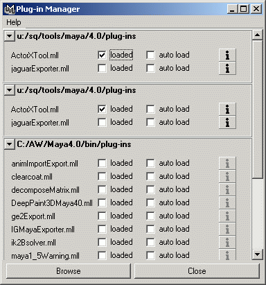
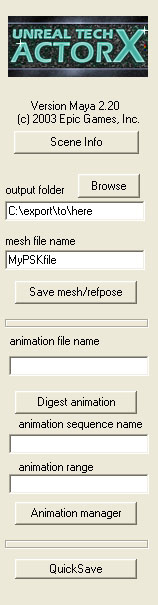
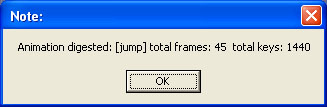
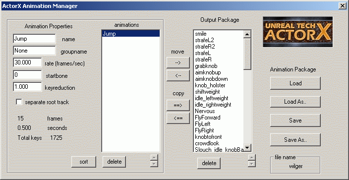

UDN
Search public documentation:
ActorXMayaTutorialKR
English Translation
日本語訳
中国翻译
Interested in the Unreal Engine?
Visit the Unreal Technology site.
Looking for jobs and company info?
Check out the Epic games site.
Questions about support via UDN?
Contact the UDN Staff
日本語訳
中国翻译
Interested in the Unreal Engine?
Visit the Unreal Technology site.
Looking for jobs and company info?
Check out the Epic games site.
Questions about support via UDN?
Contact the UDN Staff
ActorX 와 Maya 로 애니메이션 익스포트하기
문서 요약: Maya 에서 ActorX 를 사용하여 애니메이션을 익스포트하는 방법을 보여주는 튜토리얼. 문서 변경 내역: 작성 Vito Miliano?. 업데이트 Erik de Neve?.플러그인 설치
- Maya 용 ActorX 플러그인을 다운로드하여 plug-ins 디렉토리에 복사합니다.
- Maya를 시동한 다음 "loaded" 체크박스를 체크하여 플러그인을 유효화 합니다 (Settings->Plug-In Manager). Maya 를 실행할 때마다 플러그인이 자동으로 로드되도록 하고 싶다면 "auto load" 를 체크하십시오.

장면 설정
플러그인은 스킨 클러스터, 그리고 보통의 다각형과 텍스처된 도형을 모두 인식합니다. 주요 요건은 메쉬가 관절로 한데 열결된 단일 계층구조로 이루어져야 한다는 것입니다. 익스포터는 관절을 어떤 방법으로 애니메이트하는지에 대해서는 상관하지 않습니다. 소기의 프레임 범위에 걸쳐 장면 전체의 표본이 추출되고, 각 프레임에서의 최종 결과가 익스포트되는 것입니다. 축과 방향에 대해 유의하십시오: Maya 에서 Y는 위쪽을 가리키고, X는 오른쪽을, Z는 화면 밖에 있는 관람자를 가리킵니다. .PSK 로 익스포트될 때, Y 좌표의 부호가 Unreal의 손잡이 방향 (축의 상대적 방향)에 순응하기 위해 반전됩니다. Unreal 에서는 Z 축이 위를 가리키며, Y가 오른쪽을, X가 화면 밖의 관람자를 가리킵니다. 따라서 Animation 브라우저에 있는 Mesh 속성 탭을 사용하여 메쉬의 방향을 원하는대로 바로잡아야 합니다 - "Mesh" 를 확장한 다음 Rotation 변수를 확장하십시오. Rotation 변수에는 Pitch (피치), Roll (롤) 그리고 Yaw (요) 회전값이 포함되어 있습니다. 이 값들은 모두 16 비트의 integer 로, 65536 가 완전 360 도 회전에 해당됩니다. 장면에는 여러 개의 소재가 사용될 수 있습니다. 이 소재들은 최종 메쉬에서 여러 개의 소재 슬롯이 됩니다. 그 순서는 소재의 이름에 "skinXX" 태그를 붙임으로써 강제하지 않는 한, 임의인 것으로 기본 설정되어 있습니다 – 다시 말해, 소재 Body 와 Head 의 이름을 Body__Skin00 과 Head__Skin01 로 바꾸는 것은 익스포터에게 .PSK 파일을 만들 때 이 순서를 따르라고 지시하는 것입니다. Maya 익스포터에서는 두 개의 언더스코어 다음에 오는 문자들은 모두 최종 .PSK 에서 지워집니다. Maya 에는 여러 레벨의 명명된 소재와 텍스처들이 있습니다. 익스포터는 multilister 에서 쉐이더를 더블 클릭했을 때 속성에 나타나는 첫 번째 태그인 "ShadingEngine" 태그에서 이름을 찾습니다. 이것은 뼈대(및 정적) 메쉬 슬롯의 순서에 영향을 줄 뿐만 아니라, 이를 사용하여 렌더링 순서에 영향을 줄 수도 있습니다. Maya 5.0 에서는, 그 “꾀까다로운” 특성들을 확실하게 설정해두지 않는 한, IK 가 애니메이션에서 처리하는 효과가 정확하게 익스포트되지 않을 수도 있습니다.뼈대 및 메쉬 익스포트
- 익스포트 하고자 하는 액터가 들어있는 장면을 로드합니다.
- Maya 의 맨 밑에 있는 MEL 명령 창에 "axmain" 을 입력하여 ActorX 대화상자를 불러옵니다.
- 여러 필드들을 다음과 같이 채우십시오:
- Output folder: .PSK 파일을 저장하고자 하는 디렉토리의 이름을 입력하십시오. 액터의 폴더 아래 "Unreal Files" 디렉토리를 만들 것을 권장합니다. 여기서는 Browse 버튼이 매우 도움이 됩니다.
- Mesh file name: .PSK 파일의 이름을 입력하십시오. 액터의 이름을 사용할 것을 권합니다.
- "Save mesh/refpose” 버튼을 클릭하십시오. 애니메이션의 어떤 프레임이나 사용할 수 있습니다. 모델의 참조 포즈로는 쉽게 사용할 수 있도록 느긋한, 날개 편 독수리 포즈를 사용할 것이 권장됩니다.

mesh/refpose 를 저장한 뒤, 모든 것이 잘 되었으면 윈도우가 몇 개 나타날 것입니다.
애니메이션 익스포트
애니메이션을 익스포트하는 것은 두 단계로 이루어집니다. 첫째, 애니메이션(들)이 들어있는 장면을 로드하고 이를 메모리에 읽어 들이도록 애니메이션을 “소화” 합니다. 이것을 이 세션에서 익스포트하고 싶은 애니메이션의 수만큼 되풀이 합니다. 둘째, 이 새 애니메이션들을 PSA 파일에 추가하고 저장합니다.애니메이션 소화하기
- 익스포트할 애니메이션이 들어있는 파일을 로드합니다.
- Maya 의 맨 밑에 있는 MEL 명령 창에 "axmain" 을 입력하여 ActorX 대화상자를 불러옵니다.
- 여러 필드들을 다음과 같이 채우십시오:
- Output folder: 위의 skeleton/mesh 와 같습니다.
- Animation file name: 메쉬 파일과 같은 이름을 사용할 것을 권합니다 (이 파일들은 서로 다른 파일 확장자를 가지게 되므로 구별할 수 있습니다). 이 애니메이션을 기존의 .PSA 파일에 추가하고 싶다면 그 기존 .PSA 파일의 이름을 입력하십시오
- Animation sequence name: .PSA 파일 에서 이 이름으로 애니메이션을 식별하게 됩니다.
- Animation range: 이 애니메이션을 정의하는 현재 장면에 있는 프레임들을 지정하십시오 (포맷은 `4-45'; ‘숫자, 하이픈, 숫자’).

- 첫 번째 프레임의 범위 슬라이더와 시간 슬라이더가 0 을 나타내도록 하십시오 (주: 이것은 ActorX 에서 주기적으로 크래시를 일으키는 버그를 예방하기 위한 저희 측의 미신적 습성입니다. 여러분 자신의 책임하에 이 단계를 건너 뛰어도 좋습니다).
- "Digest animation" 을 클릭하십시오. 소화가 끝나면 그 애니메이션을 묘사하는 메시지 박스가 나타나는 것을 볼 수 있어야 합니다. 이 팝업창이 나타나지 않는다면 뭔가 잘못된 것이며, 플러그인이 현재 오류가 있는 상태일 가능성이 크므로 이 시점에서 Maya 를 재시작할 것을 권합니다.
- 이 세션에서 익스포트하려는 애니메이션의 수만큼 1-5 단계를 되풀이 하십시오. ActorX 가 크래시되어 처음부터 다시 시작해야 되는 경우에 대비해서 한 번에 너무 많은 수를 시도하지 않을 것을 권합니다.

.PSA 파일에 애니메이션 추가하기
애니메이션을 소화했다면, 이제 그것을 .PSA 파일에 추가할 준비가 된 것입니다.- "axmain" 대화상자가 나타나 있지 않으면 이를 불러옵니다.
- "animation manager" 버튼을 클릭하여 애니메이션 매니저를 엽니다.
- 기존의 .PSA 파일에 애니메이션을추가하는 경우에는, "Load" 를 클릭하여 해당 .PSA 파일을 로드하십시오 (이전 세션의 3b 단계에서 이미 애니메이션의 이름을 제시했다고 가정합니다. 그렇지 않다면 Load As... 버튼을 사용하십시오).
- "animations" 목록의 왼쪽에서 방금 소화한 애니메이션을 확인할 수 있어야 합니다. 오른쪽에서는 이미 그 .PSA 파일에 들어있는 애니메이션들을 볼 수 있습니다. .PSA 파일을 새로 만드는 경우에는 이 부분이 비어 있을 것입니다
- 새 애니메이션을 선택한 다음 "-->" 를 클릭하여 Output Package 에 애니메이션을 추가하십시오.
- "Save" 를 클릭하여 .PSA 파일을 저장하십시오 (사전에 애니메이션 파일의 이름이 제공되었다고 가정합니다).

일괄 처리
이 옵션은 무효화 되었습니다.ActorX 의 추가 옵션들
ActorX 에는 많은 추가 옵션들이 있습니다. MEL 명령 창에서 "axoptions" 을 입력하면 이 옵션 창이 나타납니다. axmain 창이 열려있는 동안에는 이 옵션 창이 열리지 않는다는 것을 유의하십시오. 다른 창을 열기 전에 먼저 열려 있는 것을 닫으십시오. 이제 이 옵션들을 차례로 살펴보겠습니다.Persistent Settings and Paths (지속성 설정 및 경로)
이 두 옵션은 이름만으로도 설명이 필요없이 명백합니다. 이 옵션들을 체크하면 그 위에 있는 필드들의 설정이 보존되므로, 메쉬나 애니메이션을 익스포트할 때마다 필드를 다시 입력하지 않아도 됩니다.스킨 익스포트
다음의 옵션들은 익스포트할 도형/애니메이션을 결정할 때 충족되어야 할 조건들을 판단합니다.All Skin-Type (모든 스킨 타입)
이 옵션이 체크되면 파일 내에서 뼈대에 바인드된 메쉬가 모두 익스포트 됩니다.All Textured (텍스처된 것 모두)
텍스처를 가진 도형들이 모두 익스포트 됩니다.All Selected (선택된 것 모두)
이 옵션은 무효화 되었습니다.Force Reference Pose T=0 (참조 포즈 T=0 강제)
이 옵션은 T=0에서의 포즈를 참조 포즈로 사용하도록 강제합니다. 이것은 다른 프레임에도 애니메이션을 가지고 있고, 어쩌다가 슬라이더의 첫 프레임이 애니메이션에서의 프레임 0이 아닌 파일로부터 PSK 를 익스포트하는 경우에만 유용합니다. 엔진은 PSK 파일의 익스포트를 위해 활성 슬라이더 범위의 첫 프레임을 기본으로 사용합니다. 이것이 저희가 프레임 0을 활성 범위의 일부로 권장하는 이유입니다. 일반적으로, 여러분은 항상 잘 알려져 있는, 특별한 자세의 정적 참조 포즈로부터 PSK 를 익스포트하여, 무작위 포즈를 참조 포즈로서 익스포트할 가능성이 없도록 해야 합니다.Tangent UV Splits (탄젠트 UV 분할)
이 옵션은 항상 꺼두십시오. 아니면 이 옵션을 무시하십시오.Bake Smoothing Groups (마무리 그룹 굽기)
UnrealEd 에서 뼈대 모델의 마무리는 좀 이상하게 처리됩니다. 캐릭터 모델 위에 마무리 그룹을 두려고 하면, 익스포터는 모델을 그룹의 엣지를 따라 떼어내어 그 섹션을 자체의 별도 조각으로 만듭니다. 이 과정에는 마무리된 엣지를 따라 정점들을 나누는 일이 수반됩니다. 그 다음 익스포터는 개별 조각을, 그 조각이 ‘연결된’ 더 큰 메쉬의 일부로 보일지라도, 그 자체로서 마무리하려고 합니다. 바꾸어 말하면, 여러분은 마무리의 댓가로 정점의 수를 늘리게 됩니다. 마무리 그룹의 수가 많을수록 더 많은 정점들을 가지게 됩니다. 따라서 뼈대 모델에서는 마무리 그룹이 권장되지 않습니다. 이 옵션을 체크하지 않을 것을 권합니다.Underscores to Spaces (언더스코어를 여백으로 바꿈)
이 옵션은 말 그대로입니다. 관절의 이름 등, Maya 파일에서 언더스코어가 들어있는 이름들이 영향을 받게 됩니다.Automatic Triangulate (자동 3각형화)
이것은 매우 중요한 옵션입니다. 익스포트될 당시 메쉬가 4 면체로 구성되어 있을 경우, 이것이 UnrealEd 에 들어오면 오류가 발생하게 됩니다. 일부 삼각형들은 사라져 버립니다. 그러나 삼각형화가 보다 더 기대하던 대로 되도록 여러분이 스스로 Maya 에서 삼각형화 할 것을 권합니다.Bones (뼈)
Cull Unused Dummies (사용하지 않은 더미 추려내기)
이 옵션은 무효화되었습니다.Cull Root Dummy (루트 더미 추려내기)
이 옵션은 무효화되었습니다.Hierarchy as bones (뼈로서의 계층)
이 옵션은 무시하십시오. 현재 그 결과에 일관성을 보이지 않고 있습니다.Motion (모션)
Fix Root Net Motion (루트 네트 모션 고정)
모델이 루트 뼈가 움직이도록 애니메이트 되어 있을 경우, 이 옵션으로 그 모션을 무효화할 수 있습니다. Max 에서 전진으로 변환하는 주행 주기를 만들면, 이 옵션은 UnrealEd 에서 그 모델이 제 자리에서 달리고 있는 것처럼 보이게 한다는 뜻입니다.Hard Lock (하드 락)
이 옵션은 무시하십시오.Logfiles/No Log Files (로그파일/로그파일 없음)
이름 그대로입니다. 이 옵션들은 무엇인가 올바르게 익스포트되고 있지 않다는 의구심이 생길 때 이를 점검할 수 있는 편리한 소스입니다. 여기에는 계층 정보를 수반한 뼈 목록, 정점/면/프레임 번호 및 소재 슬롯 번호 등 많은 정보가 들어 있습니다. 뼈대 및 스킨 데이터가 예상대로 익스포트 되었다는 것을 확인하는 것 이외에, 뼈 컨트롤러나 첨부의 사용에 대한 뼈의 내부적인 이름이 무엇인지 알고 싶을 때도 로그 파일을 살펴보면 확인할 수 있습니다.Script Template (스크립트 템플릿)
이전에는 Unreal 에 모델 및 애니메이션을 임포트 하기 위해 UnrealScript? 가 필요했습니다. 고맙게도, 이제 이것이 필요하지 않습니다. 자신이 무엇을 하고 있는지 잘 알고 있는 한은 이것을 무시하십시오.추가 MEL 명령들
axwritesequence: 현재 로드된 장면을 기록하는 뼈대 애니메이션을 빠르게 저장하는 명령입니다. 애니메이션 범위 전체를 시퀀스 –와 Maya 의 소스 아트 파일 이름과 똑같은 .PSA 파일 이름을 가진 하나의 시퀀스로서 저장합니다.
axprocesssequence: .PSA 를 언제나 소스 아트 폴더에 저장합니다. 그밖에는 "axwritesequence" 와 같은 작용을 합니다.
axwriteposes: axwritesequence 와 비슷하지만 각 프레임을 하나의 포즈를 가진 PSA 파일에 덤프하고, 각 파일 및 내부 시퀀스 이름에 프레임 번호를 붙입니다. 주: 일부 버전에서는 에디터의 Animation 브라우저가 단일 프레임 시퀀스의 임포트/디스플레이를 제대로 처리하지 않습니다.
위의 명령들에서 상호작용을 없애려면 "axoptions" 창에 있는 새 "no popup confirmations(팝업 확인 없음)" 체크박스를 확인해 보십시오.
버전 2.24 에서부터, 스킨과 애니메이션을 모두 전적으로 다음의 옵션들을 사용하는 MEL 명령을 통해 익스포트하는 axexecute 명령행이 있습니다. 이 옵션들은 대부분 설명이 필요없이 명백하며, 순서에 상관없이 혼합하여 사용할 수 있습니다:
axexecute [옵션 및 스위치] - -path "[대상 경로]"
- -skinfile [.psk 스킨 파일 이름]
- -autotri
- -unsmooth
- -sequence [시퀀스 이름]
- -range [시작 프레임] [종료 프레임]
- -rate [속도]
- -saveanim
- -animfile [.PSA 애니메이션 파일 이름]